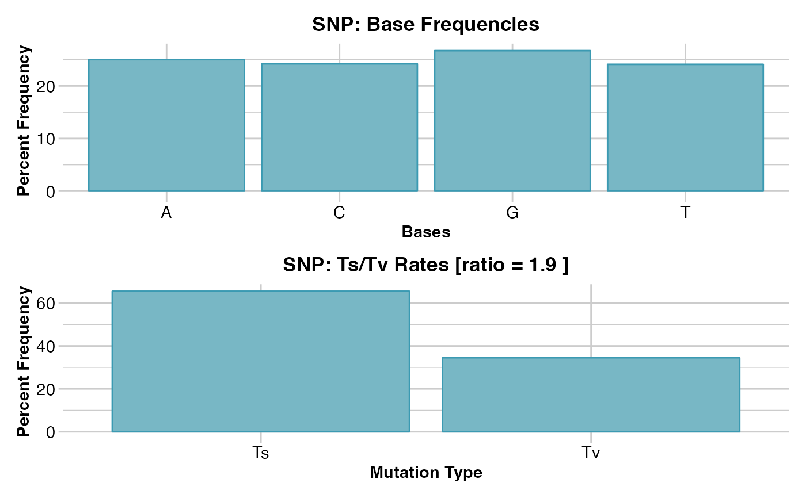
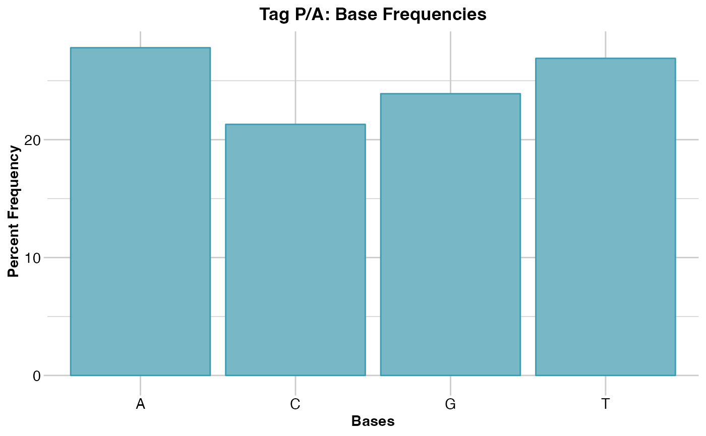

Reports summary of base pair frequencies
gl.report.bases.RdThis script calculates the frequencies of the four DNA nucleotide bases: adenine (A), cytosine (C), 'guanine (G) and thymine (T), and the frequency of transitions (Ts) and transversions (Tv) in a DArT genlight object.
Usage
gl.report.bases(
x,
plot.out = TRUE,
plot_theme = theme_dartR(),
plot_colors = two_colors,
save2tmp = FALSE,
verbose = NULL
)Arguments
- x
Name of the genlight object containing the SNP or presence/absence (SilicoDArT) data [required].
- plot.out
If TRUE, histograms of base composition are produced [default TRUE].
- plot_theme
Theme for the plot. See Details for options [default theme_dartR()].
- plot_colors
List of two color names for the borders and fill of the plots [default two_colors].
- save2tmp
If TRUE, saves any ggplots and listings to the session temporary directory (tempdir) [default FALSE]
- verbose
Verbosity: 0, silent or fatal errors; 1, begin and end; 2, progress log; 3, progress and results summary; 5, full report [default NULL, unless specified using gl.set.verbosity]
Details
The script checks first if trimmed sequences are included in the locus metadata (@other$loc.metrics$TrimmedSequence), and if so, tallies up the numbers of A, T, G and C bases. Only the reference state at the SNP locus is counted. Counts of transitions (Ts) and transversions (Tv) assume that there is no directionality, that is C->T is the same as T->C, because the reference state is arbitrary.
For presence/absence data (SilicoDArT), it is not possible to count transversions or transitions or transversions/transitions ratio because the SNP data is not available, only a single sequence tag.
Examples of other themes that can be used can be consulted in
See also
Other reporting functions:
gl.diagnostics.hwe(),
gl.report.diversity(),
gl.report.heterozygosity(),
gl.report.parent.offspring(),
gl.report.pa(),
gl.report.sexlinked()
Author
Custodian: Arthur Georges -- Post to https://groups.google.com/d/forum/dartr
Examples
# SNP data
out <- gl.report.bases(testset.gl)
#> Starting gl.report.bases
#> Processing genlight object with SNP data
#> Counting the bases
#> Counting Transitions and Transversions
#> Average trimmed sequence length: 60.7 ( 20 to 69 )
#> Total number of trimmed sequences: 255
#> Base frequencies (%)
#> A: 25.01
#> G: 26.67
#> T: 24.12
#> C: 24.2
#>
#> Transitions : 65.49
#> Transversions: 34.51
#> tv/ts ratio: 1.8977
#>

#> Returning a list containing
#> [[1]] $freq -- the table of base frequencies and transition/transversion ratios;
#> [[2]] $plotbases -- ggplot bargraph of base frequencies;
#> [[3]] $plottstv -- ggplot bargraph of transitions and transversions.Completed: gl.report.bases
#>
#' # Tag P/A data
out <- gl.report.bases(testset.gs)
#> Starting gl.report.bases
#> Processing genlight object with Presence/Absence (SilicoDArT) data
#> Counting the bases
#> Average trimmed sequence length: 63.6 ( 29 to 69 )
#> Total number of trimmed sequences: 255
#> Base frequencies (%)
#> A: 27.79
#> G: 23.93
#> T: 26.94
#> C: 21.34
#>
#> Tag P/A data (SilicoDArT), transition/transversions cannot be calculated
#>

#> Returning a list containing
#> [[1]] $freq -- the table of base frequencies and transition/transversion ratios;
#> [[2]] $plotbases -- ggplot bargraph of base frequencies;
#> [[3]] $plottstv -- ggplot bargraph of transitions and transversions.Completed: gl.report.bases
#>